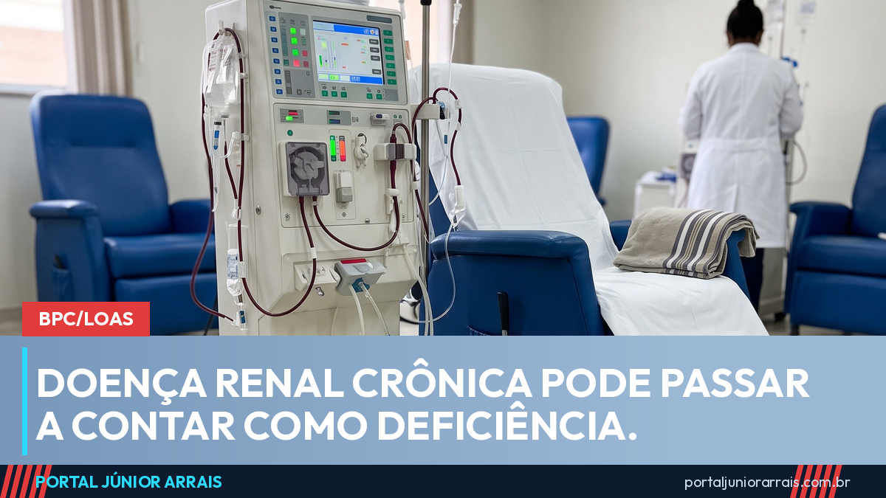
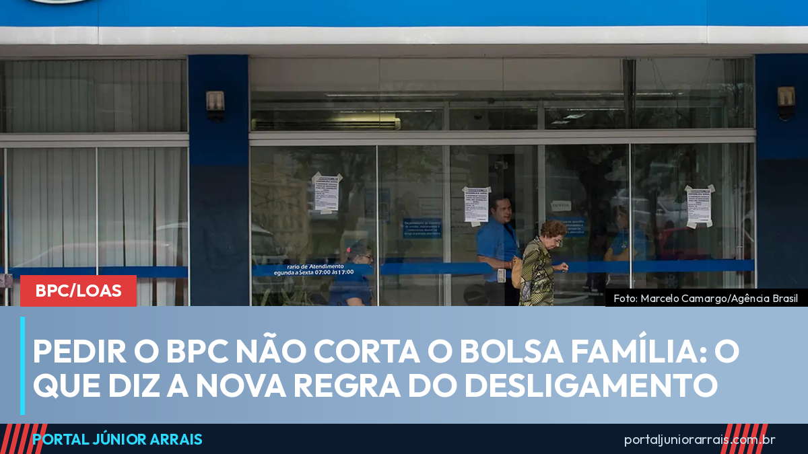

Início › BPC/LOAS
BPC/LOAS 2026: pagamento de novembro, valor, regras e últimas notícias
O Benefício de Prestação Continuada (BPC), que muita gente chama de LOAS, paga um salário mínimo por mês, R$ 1.621,00 em 2026, ao idoso com 65 anos ou mais e à pessoa com deficiência de família de baixa renda. Não é aposentadoria e não exige contribuição ao INSS. O pagamento segue o calendário do INSS pelo último número do cartão. Aqui você encontra a data de cada final, o calendário do ano, as regras de renda, o que acontece na revisão do cadastro e as notícias mais recentes, atualizadas todos os dias.
Calendário do BPC: pagamento de novembro de 2026
O BPC de novembro é pago entre 24 de novembro e 7 de dezembro, um final do cartão por dia útil, junto com quem recebe aposentadoria ou pensão de um salário mínimo.
| Final do benefício | Data | Dia |
|---|---|---|
| Final 1 | 24/11 | terça-feira |
| Final 2 | 25/11 | quarta-feira |
| Final 3 | 26/11 | quinta-feira |
| Final 4 | 27/11 | sexta-feira |
| Final 5 | 30/11 | segunda-feira |
| Final 6 | 01/12 | terça-feira |
| Final 7 | 02/12 | quarta-feira |
| Final 8 | 03/12 | quinta-feira |
| Final 9 | 04/12 | sexta-feira |
| Final 0 | 07/12 | segunda-feira |
Calendário do BPC: pagamento de dezembro de 2026
O BPC de dezembro é pago entre 22 de dezembro e 8 de janeiro, um final do cartão por dia útil, junto com quem recebe aposentadoria ou pensão de um salário mínimo.
| Final do benefício | Data | Dia |
|---|---|---|
| Final 1 | 22/12 | terça-feira |
| Final 2 | 23/12 | quarta-feira |
| Final 3 | 28/12 | segunda-feira |
| Final 4 | 29/12 | terça-feira |
| Final 5 | 30/12 | quarta-feira |
| Final 6 | 04/01 | segunda-feira |
| Final 7 | 05/01 | terça-feira |
| Final 8 | 06/01 | quarta-feira |
| Final 9 | 07/01 | quinta-feira |
| Final 0 | 08/01 | sexta-feira |
Valor e limite de renda em 2026
- R$ 1.621,00valor mensal do BPC, um salário mínimo
- R$ 405,25limite de renda por pessoa da família, um quarto do mínimo
- R$ 810,50auxílio-inclusão para quem recebe BPC e passa a trabalhar
- 65 anosidade mínima no BPC do idoso; na deficiência, qualquer idade
Pelas regras atualizadas pelo MDS e pelo INSS, o benefício continua mesmo que a renda varie, desde que a renda do último mês ou a média dos últimos 12 meses fique em até um quarto do salário mínimo por pessoa. Entram na conta o requerente, o cônjuge ou companheiro, os pais, os irmãos e os filhos solteiros que moram na mesma casa. Ficam de fora, entre outros, o BPC de outro idoso ou pessoa com deficiência da família e a aposentadoria de até um salário mínimo de um idoso ou pessoa com deficiência. Gastos contínuos com saúde, como remédios, fraldas e alimentação especial que o SUS não oferece, podem ser descontados, com comprovação.
Quem tem direito
- pessoa idosa com 65 anos ou mais;
- pessoa com deficiência de qualquer idade, com impedimento de longo prazo, de pelo menos dois anos, que dificulte a participação na sociedade;
- família com renda dentro do limite e inscrita no CadÚnico, com os dados em dia.
No BPC da pessoa com deficiência, o INSS faz duas avaliações, a perícia médica e a avaliação social, e as duas contam juntas. O que decide não é o nome da doença, e sim as limitações que ela causa no dia a dia. As regras completas estão no guia do BPC/LOAS.
Revisão do cadastro: bloqueio, suspensão e corte
O INSS cruza os dados do CadÚnico com outras bases do governo e convoca quem está sem cadastro ou com o cadastro desatualizado há muito tempo. Quem não responde passa por três etapas:
- bloqueio: o dinheiro entra na conta, mas o saque fica travado;
- suspensão: os depósitos param até a pendência ser resolvida, num prazo de 45 ou 90 dias conforme o tamanho da cidade;
- cessação: o benefício é encerrado, e a volta passa a depender de recurso ou de um novo pedido.
Quem resolve a pendência dentro do prazo da suspensão tem direito a receber os valores que ficaram retidos. Além disso, a lei manda reavaliar o benefício a cada dois anos, e quem tem impedimento permanente reconhecido fica dispensado de nova perícia. Veja quem está dispensado da reavaliação.
O que o BPC não dá
O BPC não paga 13º, não deixa pensão por morte para a família e não pode ser somado a aposentadoria, pensão ou seguro-desemprego. Quem tem deficiência e já contribuiu ao INSS pode ter direito à aposentadoria da pessoa com deficiência, que paga 13º e pensão e não olha a renda da família. Para quem recebe BPC e consegue emprego com salário de até dois mínimos, o benefício vira auxílio-inclusão automaticamente, sem novo pedido.
Calendário completo do BPC de 2026
Cada linha é o mês do benefício e cada coluna, um final do cartão. O BPC segue as datas de quem ganha até um salário mínimo no INSS.
| Benefício de | 1 | 2 | 3 | 4 | 5 | 6 | 7 | 8 | 9 | 0 |
|---|---|---|---|---|---|---|---|---|---|---|
| Janeiro | 26/01 | 27/01 | 28/01 | 29/01 | 30/01 | 02/02 | 03/02 | 04/02 | 05/02 | 06/02 |
| Fevereiro | 23/02 | 24/02 | 25/02 | 26/02 | 27/02 | 02/03 | 03/03 | 04/03 | 05/03 | 06/03 |
| Março | 25/03 | 26/03 | 27/03 | 30/03 | 31/03 | 01/04 | 02/04 | 06/04 | 07/04 | 08/04 |
| Abril | 24/04 | 27/04 | 28/04 | 29/04 | 30/04 | 04/05 | 05/05 | 06/05 | 07/05 | 08/05 |
| Maio | 25/05 | 26/05 | 27/05 | 28/05 | 29/05 | 01/06 | 02/06 | 03/06 | 05/06 | 08/06 |
| Junho | 24/06 | 25/06 | 26/06 | 29/06 | 30/06 | 01/07 | 02/07 | 03/07 | 06/07 | 07/07 |
| Julho | 27/07 | 28/07 | 29/07 | 30/07 | 31/07 | 03/08 | 04/08 | 05/08 | 06/08 | 07/08 |
| Agosto | 25/08 | 26/08 | 27/08 | 28/08 | 31/08 | 01/09 | 02/09 | 03/09 | 04/09 | 08/09 |
| Setembro | 24/09 | 25/09 | 28/09 | 29/09 | 30/09 | 01/10 | 02/10 | 05/10 | 06/10 | 07/10 |
| Outubro | 26/10 | 27/10 | 28/10 | 29/10 | 30/10 | 03/11 | 04/11 | 05/11 | 06/11 | 09/11 |
| Novembro | 24/11 | 25/11 | 26/11 | 27/11 | 30/11 | 01/12 | 02/12 | 03/12 | 04/12 | 07/12 |
| Dezembro | 22/12 | 23/12 | 28/12 | 29/12 | 30/12 | 04/01 | 05/01 | 06/01 | 07/01 | 08/01 |
Últimas notícias do BPC/LOAS
- BPC: os documentos que o INSS pede e onde o pedido costuma travar1 de set. de 2026

Doença renal crônica e fissura labiopalatina podem passar a contar como deficiência19 de ago. de 2026- Reavaliação do BPC: quem está dispensado de passar por nova perícia11 de ago. de 2026

Pedir o BPC não corta o Bolsa Família: o que diz a nova regra do desligamento5 de ago. de 2026- Pediu BPC e recebe Bolsa Família? A declaração que você assina não corta o benefício na hora3 de ago. de 2026
- Quem recebe BPC e arruma emprego não perde tudo: existe o auxílio-inclusão2 de ago. de 2026
- BPC em agosto: o que pode bloquear o seu benefício e como evitar28 de jul. de 2026
Ver todas as notícias do BPC/LOAS
Outros benefícios
Perguntas frequentes
Qual é o valor do BPC em 2026?
Um salário mínimo, R$ 1.621,00 por mês. O BPC não tem 13º e não gera pensão por morte para a família, porque é um benefício assistencial e não depende de contribuição.
Qual é o limite de renda para ter o BPC?
A renda da família, dividida pelas pessoas que moram juntas, tem de ficar em até um quarto do salário mínimo por pessoa, R$ 405,25 em 2026. Pelas regras atuais, o benefício é mantido se a renda do último mês ou a média dos últimos 12 meses ficar dentro desse limite. Gastos contínuos e comprovados com saúde que o SUS não oferece podem ser descontados da conta.
Quando o BPC cai?
No calendário do INSS, junto com aposentadorias e pensões de um salário mínimo: nos últimos dias úteis do mês e nos primeiros do mês seguinte, conforme o último número do cartão, sem o dígito depois do traço.
Quem recebe Bolsa Família pode pedir o BPC?
Pode. O valor do Bolsa Família conta como renda no cálculo do BPC, e por isso existe o desligamento voluntário, que pode ser pedido no próprio requerimento. Segundo o Ministério do Desenvolvimento e Assistência Social, o Bolsa Família não é interrompido de imediato enquanto o BPC é analisado.
Meu BPC foi bloqueado. O que significa?
Na revisão do cadastro, o benefício passa por etapas: primeiro o bloqueio, quando o dinheiro entra mas o saque fica travado; depois a suspensão, quando os depósitos param; e por fim a cessação, quando o benefício é encerrado. Quanto antes a pendência for resolvida, menor o prejuízo. Não pague ninguém para desbloquear: procure um profissional de sua confiança para olhar o caso.
Cuidado com golpe
O BPC é um dos temas preferidos de quem promete o que não pode cumprir: "consigo o BPC para qualquer pessoa", "acelero o seu pedido", "pague uma taxa e sai em uma semana". A revisão do cadastro também virou isca, com mensagens dizendo que o benefício "será cortado em 48 horas" e um link para "regularizar", ou pedindo senha para "confirmar a perícia".
Nenhum órgão do governo cobra taxa nem pede Pix, senha ou foto de documento para conceder, manter ou desbloquear benefício. A conta da renda, quem entra no grupo familiar e a documentação da deficiência pedem análise cuidadosa: procure um profissional de sua confiança para olhar o seu caso.
Fontes oficiais
- INSS: tabela oficial de pagamento de benefícios de 2026
- Lei nº 8.742/1993 (Lei Orgânica da Assistência Social)
- MDS: portaria atualiza regras do BPC (renda do último mês ou média de 12 meses)
- MDS: desligamento voluntário do Bolsa Família para quem pede o BPC (13/11/2026)
- Portaria Interministerial MPS/MF nº 13, de 9 de janeiro de 2026 (salário mínimo de 2026)
Página atualizada em 14 de nov. de 2026. Conteúdo informativo — não substitui orientação individualizada sobre o seu caso.
Júnior Arrais · Editor do Portal Júnior Arrais
Comunicador de Ubá (MG). Escreve todos os dias sobre benefícios sociais, INSS, trabalho e economia do dia a dia, a partir do Diário Oficial, de portarias e de fontes oficiais, em linguagem simples. Conheça a linha editorial e a política de correções do portal.